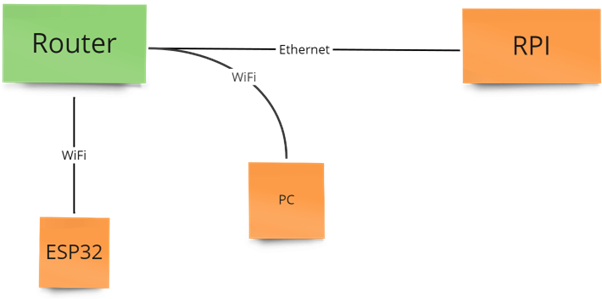
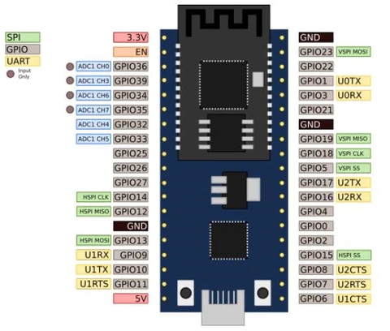
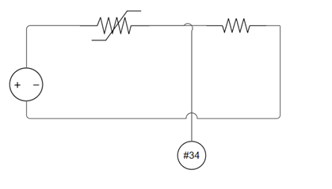
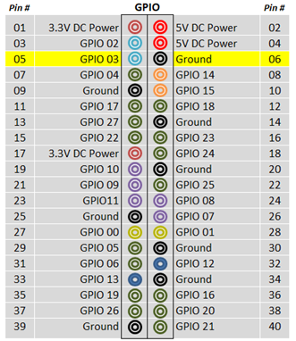
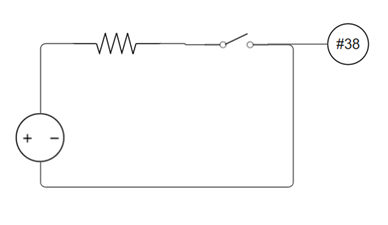
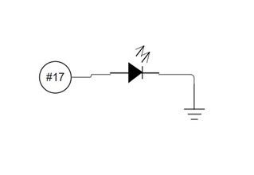
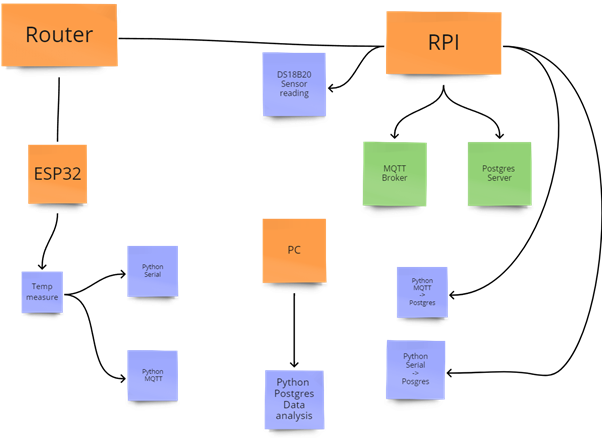

Methods
Hardware Overview
In setting up the temperature management system, several hardware components are needed. Both for development, but also for further production of the project. All of the hardware components are listed in Table #. The RPI hosts the MQTT broker, the relational database, the temperature handling, as well as the alarm handling. The ESP32 functions as an Analog to Digital converter, transmitting temperature readings to the RPI, either through the Serial protocol over USB, or through the MQTT broker. The remaining hardware components are quite simple and self-explanatory in their table rows.
| Hardware | Description |
|---|---|
| Raspberry Pi 4 | Small Linux based computer with IO |
| esp32 | Microcontroller with built in WiFi |
| Thermistor | Analog temperature sensor |
| Router | Wireless access for components |
| Resistors | 1k and 10k ohm |
| Jumper Wires | For circuit connections |
| Breadboards | For Circuit development |
| Push Button | Operator interface for alarm system |
| LED | Operator interface for alarm system |
Software Overview
Creating an application with programs running on both a windows PC,
a Raspberry Pi running Linux, and a ESP32 microcontroller
requires an array of software. With Visual studio Code being
at the core of it. Through the SSH extension for VS Code.
Its possible to connect to the Raspberry Pi over the SSH protocol.
This allows for development on the local computer, with the codebase
residing on the Raspberry Pi. This eliminates the need for graphically
interfacing the RPI, minimizing the strain on the RPI. An additional
extension for VS Code is Platform IO, this functions the same way
as Arduino IDE. Development for the ESP32 module was done through
this extension. For the MQTT broker, a broker called Mosquitto was
used, this was run on the Raspberry Pi and handled publish/subscribe.
Postgres DB was the chosen relational database, it was initially
intended to use Mongo DB locally on the RPI, but was not possible
due to incompatible chip architecture.
| Software | Description |
|---|---|
| Visual Studio Code | IDE for programming |
| VS Code: SSH | Extension for remote work with VS code |
| VS Code: Platform IO | Extension for Microcontroller development |
| Mosquitto MQTT broker | Broker, handling the MQTT protocol |
| Postrgres SB | Relational Database |
| ThingSpeak | Cloudbased service for presenting data |
| Python | Programming language used on the RPI |
| C++ | Programming language used on microcontroller |
Topology
For development, easy access to all the programmable
components was vital. Developing code directly on the RPI
would make it cumbersome, as its straining on the RPI’s
processor, and the need for ESP32 programming would require
one to switch between developing environments. The SSH
extension for Visual Studio Code was used, this allowed
development on both the ESP32 and RPI to be performed at
the same time. For accessing the RPI over SSH, a new network
was established with a separate router. With the RPI connected
to a router, the database- and MQTT server was made accessible,
for the local computer and the ESP32. Additionally, internet
access was required for the RPI, for the OS to be updated
and specific python packages installed for the project.
The RPI was therefore connected to the router over ethernet,
while at the same time connected to a separate Wifi network with internet access.

Temperature Handling
The raspberry receives as mentioned temperature readings in three different ways. The DS18B20 reads the temperature and transmits it digitally through the 1-Wire protocol to the RPI. On the RPI the values can be found under “/sys/bus/w1/devices/”, the data is accessed through a python script, together with the OS library. The second way the RPI receives temperature readings is through a thermistor. The RPI is lacking Analog inputs on its GPIO, am ESP32 is therefore used as an ADC. The microcontroller ESP32 enables temperature data to be transmitted through WiFi, Bluetooth, and as for this case, through Serial over USB. The ESP32 reads the analog voltage readings through the thermistor, scales the data, applies a Low pass filter, before transmitting it digitally over Serial. On the RPI a python script receives the data with the help of a Serial library on “/dev/ttyUSB0”. The third and preferred way to transmit temperature data is over the MQTT protocol. The ESP32 is connected to the router over Wifi, temperature data is published to a MQTT broker running on the RPI. On the ESP32, a C++ program is running, that uses a Wi-Fi library, as well as a MQTT library to be able to publish the data to the RPI. A python script running on the RPI subscribes to the same topic as the ESP32 is publishing on, this gives access to the live temperature data on the RPI for further processing.
 Alarm Handling
The temperature data is to be utilized in an alarm system. The alarm system is built on Python and hosted on the RPI. When the temperature reaches above a certain threshold, the LED indicates an active alarm. When the temperature reaches below the same threshold, the LED gets dimmed, indicating an unacknowledged alarm. The alarm will then be able to acknowledge by pressing the button. This turns off the LED. Both of the schematics in Figure # are connected to a small breadboard and connected to the RPI.
  Data Handling
The temperature readings are to be stored in a database together with the states of the alarm system. A Postgres Database server is set up on the RPI. On the database a single table is set up, the temperature process values, the alarm set-point and the alarm state is stored. Running in parallel on the RPI is a MQTT broker. The Open-Source version Mosquito is used as the MQTT broker, configured to run without any credentials on the local ip-address of the RPI for easy access. Transmitting the data from the ESP32 is as mentioned above, published through a Wifi connection over the MQTT protocol. The python script running on the RPI subrscribing to the temperature data is inserting the live temperature data into the Postgres table.
Data visualization and Analysis
The data produced from the temperature values and alarm system, is visualized through the cloud platform Thingspeak. Its then analyzed with the help of the Pandas library on python. The python script running on the RPI that’s subscribing to the temperature data over MQTT is also sending the temperature values to Thingspeak. This is done with the help of the Requests library, the REST API protocol is used to send a HTTPS put command, sending the data securely to the cloud platform. The temperature data is then plotted in Line graphs. For data analysis, a separate python script running locally on the PC is used. The python script queries the temperature data from the database running on the RPI. The temperature data is then structured into a Pandas Dataframe. Making it easy to utilize the Analyze function for pandas Dataframes and for plotting, both for temperature value line plotting, as well bar graphs for the analysis results.
